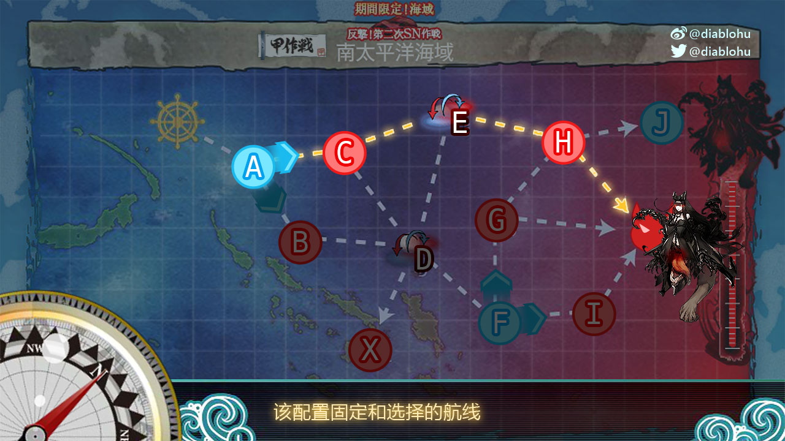
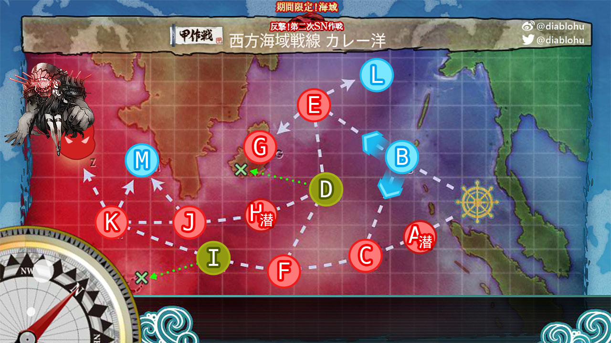

活动须知
舰Colle的活动又开始了。如往常一样，联合舰队旗舰此次也会对活动限定海域的攻略打法进行整理，方便大家进行攻略。
此次活动与上次一样，难度分级机制与锁船机制联合出现，而这两种机制的连锁反应势必会让三档难度的实际游戏体验产生极大的差别。那么如无意外，联合舰队旗舰此次只会分析整理高难度作战(甲/乙)的作战攻略。
另外，在活动开始的初期，本帖只会更新我的攻略记录和一些心得体会，完整的攻略、分析等内容需要稍等几天。
- 本次活动开始于2015年8月10日，持续时间尚未官方确认
- 本次活动综合使用自选难度与锁船机制
- 出击前请确保母港舰娘剩余量、装备剩余量和舰队配置是否符合要求
舰队配置代码
分享舰队配置时我也会提供舰队配置代码，这种代码可以在是谁呼叫舰队或艦載機厨デッキビルダー中使用
舰种简称
本攻略中将会对舰种使用英文字母的简称来称呼。
- DD - 驱逐舰 / 防空驱逐舰
- CL - 轻巡洋舰 / 防空轻巡洋舰
- CLT - 重雷装巡洋舰
- CA - 重巡洋舰 / 防空重巡洋舰
- CAV - 航空巡洋舰
- BB - 战列舰
- BBV - 航空战列舰
- CV - 航空母舰 / 装甲航母
- CVL - 轻航母
- SS - 潜艇
- SSV - 潜水空母
- LHA - 登陆突击舰(扬陆舰)
- AV - 水上机母舰
- AO - 舰队油船 (给油舰)
“锁船”机制与指引
本次活动依旧使用锁船机制：
- 准备作战：E1+E2，其中E2为联合舰队
- 机动部队：E3+E6，均为联合舰队
- 挺身部队：E4，单舰队
- 西部舰队：E5，单舰队
- 参加E5的西部舰队无法参加E7决战
- 锁船仅适用于乙和甲难度，丙难度不受影响
根据各个关卡的特性和带路特征，联合舰队旗舰在此提出如下建议：
- 菊月可留给E1
- E4有史实相关带路机制，不满足则会道中多1战。带路条件为以下舰娘以某种方式组合
- 金刚、比睿、榛名、雾岛、夕立、凌波、晓、春雨
- 已知组合
- 金刚+榛名
- 比睿+雾岛
- 比睿+夕立
- 雾岛+凌波
- 夕立+晓
- 夕立+春雨
- 吹雪+初雪
- 鸟海+古鹰+加古
- 古鹰+吹雪
- 并非必须2BB，如金刚+比睿+雾岛完全可以
- 在此基础上决定金刚级的出阵顺序
- E6也有史实相关带路机制，不过不满足也不是大问题
- 已知组合
- 夕立+绫波
- 吹雪+古鹰
- 比睿+雾岛
- 满足上述条件的航母机动部队会驶向水上打击部队的航路
- 由于E3 E6共享锁船，若想使用该带路机制，可直接派往E3作战
- 已知组合
- 高等级CA在E2~E5都有不错的发挥，请谨慎分配
- 龙骧在E4有上路带路
- E5需要一只DD才可进入Boss战
- 秋津洲在E5有带路功效，可道中减少一场战斗，外加规避战舰RU级的战斗
- 但其自身作战能力较弱，是否派出作战有待商榷
- 在E5，除秋津洲+1DD之外，1CAV+2DD也可以有同样的效果
- E3可以考虑派出决战配置
- 此次对CLT有着严格的限制，已知E3可用最多1艘，E6&E7不可用
舰载机熟练度
舰载机熟练度是本次活动期间引入的新系统，本攻略并不会详细介绍该系统，在此仅指出一点：高等级的舰攻有着可观的制空战力收益，另外由于舰攻很难被打光，也不用特别担心练度损失，练度很容易提升。
建议在攻略后期地图之前，先将烈风队练至高练度，E3是一个不错的场所。
活动相关任务
本次活动后续海域地图通过任务解锁，请确保在出击前接受了相关任务，以下是部分与解锁地图直接相关的任务：
- 第二次SN作戦、初動作戦完了！ 要求E2通关，解锁E3前序任务
- 主力機動部隊の前路哨戒を実施せよ！ 在任意海域中击沉潜艇，解锁E3
- ソロモン海方面の制空権を奪え！ 要求E4通关，解锁E5前序任务
更新记录
2015/08/16
- 初始化
E1 - 発動準備、第二次SN作戦！
攻略条件
舰队中存在1CL+2DD
通关奖励
- 甲：家具职人 x1，给粮舰 伊良湖 x1，补强增设 x2，战斗粮食 x4
- 乙：家具职人 x1，给粮舰 伊良湖 x1，补强增设 x1，战斗粮食 x3
- 丙：家具职人 x1，补强增设 x1，战斗粮食 x2
海域攻略简述
- 单舰队出击
- 锁船：参与该战斗的舰娘可出击E2、E7
- 简易航向规则如下
- 水雷战队(CL+DD)：A -> D -> Boss 或 A -> B -> D -> Boss
- 菊月可保证 A -> D -> Boss
- 水雷战队(CL+DD)：A -> D -> Boss 或 A -> B -> D -> Boss
- 其他配置举例
- 2BB + 1CL + 2DD(其中有菊月) + 1CAV：A -> D -> Boss
- 2BB + 1CL + 2DD + 1CVL：A -> C -> E -> Boss
- 除地图上标注之外，其他需要注意的战斗点
- A：敌水雷战队
- B：战舰RU级Flagship + 2x 战舰RU级Elite
- E：重巡RI级Flagship + 重巡NE级Elite + 水雷战队
- Boss阵容
- 驱逐栖姬 + 6x DD后期型
- 最终阶段：驱逐栖姬 + 2x DD后期型Elite + 3x DD后期型
- 由于与E2共享锁船判定，E2又为联合舰队出战，建议各位直接使用E2预定舰娘出击E1，在这个范围内，决定是否使用大船。斩杀阶段建议使用大船，无他，只为省心
需要注意的掉落
- 野分 (E/Boss)
- 时津风 (E/Boss)
- 大淀 (E/Boss)
舰队配置
请详细阅读上文的锁船指南！不建议这里使用金刚 + 雾岛！
配置代码
[[[149,[98,-1],[103,137,102,116],[null,10,null,6]],[152,[97,-1],[9,103,59,36],[10,null,null,6]],[437,[77,-1],[122,122,87],[10,1]],[147,[85,-1],[122,122,87],[10]],[160,[80,-1],[65,50,59],[1,9]],[296,[80,-1],[94,113,100,54],[]]],[],[],[]]
通关视频
甲难度详尽敌人配置
| 制空 / 优势 / 确保 | |||||||
|---|---|---|---|---|---|---|---|
| A | 轻巡HE级Flagship | 驱逐I级后期型 | 驱逐I级后期型 | 驱逐I级 | 驱逐I级 | - | |
| B | 战舰RU级Flagship | 战舰RU级Elite | 战舰RU级Elite | 驱逐I级后期型 | 驱逐I级后期型 | - | |
| C | 潜水KA级Flagship | 潜水KA级 | 潜水KA级 | 潜水KA级 | - | ||
| E | 重巡RI级Flagship | 重巡NE级Elite | 轻巡HE级Flagship | 驱逐I级后期型 | 驱逐I级后期型 | - | |
| F | 轻巡HO级Flagship | 潜水KA级Flagship | 潜水KA级 | 潜水KA级 | 潜水KA级 | - | |
| Boss | 驱逐栖姬 | 驱逐RO级后期型 | 驱逐RO级后期型 | 驱逐I级后期型 | 驱逐I级后期型 | 驱逐I级后期型 | - |
| Boss（最终形态） | 驱逐栖姬 | 驱逐RO级后期型Elite | 驱逐RO级后期型Elite | 驱逐I级后期型 | 驱逐I级后期型 | 驱逐I级后期型 | - |
详尽航向规则
| 起始点 | 条件 | 结果 |
|---|---|---|
| A | SS/SSV 至少 3 或 索敌能力不足 | 必定 F |
| 不满足上述条件时，CV/CVL 至少 1 | 必定 C | |
| 不满足上述条件时，SS/SSV 至少 1 或 BB/BBV 至少3 | 必定 B | |
| 不满足上述条件时，包含 菊月 | 必定 D | |
| 不满足上述条件时 | 随机 BD，D较高几率 |
E2 - 連合艦隊、ソロモン海へ！
通关奖励
- 甲：驱逐舰 江风，补强增设 x1，战斗粮食 x2，91式高射装置 x1
- 乙：驱逐舰 江风，补强增设 x1
- 丙：驱逐舰 江风
海域攻略简述
- 联合舰队出击，可自由选择航母机动部队或水上打击部队
- 锁船：参与该战斗的舰娘可出击E1、E7
- 简易航向规则
- 在A战斗后，机动部队会驶向C点，水上打击会驶向B
- 机动部队：C为手动选择航向
- 水上打击：主舰队BB+CV不超过2则会驶向E，规避战舰RU级Flagship，不包括CVL
- 在A战斗后，机动部队会驶向C点，水上打击会驶向B
- 除地图上标注之外，其他需要注意的战斗点
- A：敌水雷战队
- D：战舰RU级Flagship
- E：重巡水面舰队
- G：重巡水面舰队
- H：敌机动部队
- 航母机动部队会遇到敌人的航母机动部队，其中混有轻巡TSU级Elite，再算上道中的航空战，请确保出击时有400+的制空战力(没有考虑舰载机熟练度)，攻击机编队为最大格配置——即便如此也有几率被打光
- 航母机动部队道中3战(其中1战为航空战)，水上打击部队道中4战
- Boss阵容
- 轻巡栖鬼 + 战舰TA级Flagship + 战舰TA级Elite + 重巡NE级Elite + 2x DD后期型Elite
- 最终阶段：轻巡栖鬼 + 战舰栖姬 + 重巡NE级Elite + 重巡NE级 + 2x DD后期型Elite
- 请根据自身情况选择联合舰队编成，个人推荐水上打击部队(配置见下)，需要注意斩杀时候敌人配置强劲，强烈建议配置决战支援
需要注意的掉落
- 春雨 (G/Boss)
- 阿贺野 (Boss)
- 能代 (Boss)
- 大鲸 (G/Boss)
- 云龙 (Boss)
舰队配置
请详细阅读上文的锁船指南！不建议这里使用金刚 + 雾岛！
配置代码
[[[129,[70,-1],[107,62,50,123],[null,null,2]],[152,[97,-1],[103,137,59,36],[null,10,null,6]],[149,[98,-1],[103,114,59,116],[null,10,null,6]],[130,[78,-1],[124,80,50,123],[]],[296,[80,-1],[94,111,54,108],[]],[297,[65,-1],[113,100,54,108],[]]],[[192,[90,-1],[50,50,102,74],[9,6]],[160,[91,-1],[65,134,59],[1,10]],[437,[78,-1],[122,91,34],[1]],[147,[86,-1],[122,91,34],[]],[179,[70,-1],[122,91,87],[10]],[180,[70,-1],[122,91,87],[10]]],[[275,[97,-1],[9,9,105,31],[10,null,null,6]],[276,[97,-1],[9,9,105,124],[6]],[429,[90,-1],[99,111,113,31],[]],[430,[83,-1],[99,111,113,31],[]],[144,[98,-1],[63,91,88],[1,null,6]],[145,[97,-1],[91,91,88],[]]],[]]
通关视频
甲难度详尽敌人配置
| 制空 / 优势 / 确保 | |||||||
|---|---|---|---|---|---|---|---|
| A | 重巡RI级Flagship | 重巡RI级Flagship | 驱逐RO级后期型Elite | 驱逐RO级后期型Elite | 驱逐I级后期型 | 驱逐I级后期型 | - |
| B | 潜水KA级Flagship | 潜水KA级Flagship | 潜水KA级 | 潜水KA级 | - | ||
| D | 战舰RU级Flagship | 战舰RU级Flagship | 轻巡TSU级Elite | 雷巡CHI级Flagship | 驱逐RO级后期型Elite | 驱逐RO级后期型Elite | - |
| E | 重巡RI级Flagship | 重巡NE级Elite | 重巡NE级Elite | 轻巡TSU级 | 驱逐I级后期型 | 驱逐I级后期型 | - |
| F | 空母WO级Flagship (新型B) | 空母WO级Flagship (新型A) | 轻巡TSU级Elite | 轻巡TSU级Elite | 驱逐HA级后期型 | 驱逐HA级后期型 | ? |
| 空母WO级Flagship (新型C) | 空母WO级Flagship (新型A) | 轻巡TSU级Elite | 轻巡TSU级Elite | 驱逐HA级后期型 | 驱逐HA级后期型 | ? | |
| G | 轻巡HE级Flagship | 输送WA级Flagship | 输送WA级Flagship | 输送WA级Flagship | 驱逐I级后期型Elite | 驱逐I级后期型Elite | - |
| 轻巡HE级Flagship | 输送WA级Flagship | 输送WA级Flagship | 驱逐HA级后期型Elite | 驱逐I级后期型Elite | 驱逐I级后期型Elite | - | |
| H | 空母WO级Flagship (新型B) | 空母WO级Flagship (新型A) | 空母WO级Flagship (新型A) | 重巡NE级Elite | 驱逐HA级后期型 | 驱逐HA级后期型 | ? |
| 空母WO级Flagship (新型B) | 空母WO级Flagship (新型A) | 驱逐TSU级Elite | 重巡NE级Elite | 驱逐HA级后期型 | 驱逐HA级后期型 | ? | |
| J | 空母WO级Flagship (新型C) | 轻母NE级Flagship | 轻母NE级Flagship | 驱逐TSU级Elite | 驱逐HA级后期型 | 驱逐HA级后期型 | ? |
| Boss | 轻巡栖鬼 | 战舰TA级Flagship | 战舰TA级Elite | 重巡NE级Elite | 驱逐HA级后期型Elite | 驱逐HA级后期型Elite | - |
| Boss（最终形态） | 轻巡栖鬼 | 战舰栖姬 | 重巡NE级Elite | 重巡NE级 | 驱逐HA级后期型Elite | 驱逐HA级后期型Elite | - |
详尽航向规则
| 起始点 | 条件 | 结果 |
|---|---|---|
| A | 水上打击部队 | 必定 B |
| 航母机动部队 | 必定 C | |
| B | 包含SS/SSV | 随机 DEK |
| 不满足上述条件时，BB+CV (不含CVL) 至少3 | 必定 D | |
| 不满足上述条件时，BB+CV (不含CVL) 最多2 | 必定 E | |
| 不满足上述条件时，其他条件 | 随机 DE | |
| H | 索敌能力足够 | 必定 Boss |
| 索敌能力不足 | 必定 L | |
| J | 索敌能力足够 | 必定 H |
| 索敌能力不足 | 必定 L |
E3 - 激突！第二次南太平洋海戦
通关奖励
- 甲：九七式舰攻(村田队)，15m二重测距仪(+21号对空电探)，补强增设 x2，应急修理女神 x1，改修资财 x3
- 乙：九七式舰攻(村田队)，15m二重测距仪(+21号对空电探)，补强增设 x1，应急修理要员 x1
- 丙：九七式舰攻(村田队)，补强增设 x1，应急修理要员 x1
海域攻略简述
- 联合舰队出击
- 水上打击部队基本无法进入 Boss
- 锁船：参与该战斗的舰娘可出击E7
- 无论哪条线路，敌人都有极强的航空力量，建议机动部队编成
- 无论哪条线路，道中都存在[轻巡TSU级Elite]和航空战，强烈建议将舰载机攻击队编入最大格中
- 出击时请配出400+的制空战力(未考虑舰载机熟练度)，强烈推荐高等级舰攻，其带来的隐藏制空战力不容忽视
- 如果以Boss为目标，舰队请满足下述条件，若不满足航向会有惩罚，道中会经历2场航空战
- CLT 最多 1
- CV (不包含CVL) 必须 2 只
- BB 最多 4
- 不包括 SS/SSV
- A与F均为自选航向点，D和E均为航空战
- X与飞行场姬作战
- 千万不要去G！那里有装备了地狱猫的 [空母WO级改Flagship]！
- Boss阵容
- 水母栖姬 + 空母栖鬼 + 空母栖鬼 + 重巡NE级Elite + 2x DD后期型Elite
- 最终阶段：Boss自身小幅加强
- 主力舰队建议配置2BB+2CV+2CVL，全力保证制空
需要注意的掉落
- NEW! 瑞穗 (Boss)
- 马鹿油 (X/Boss)
- 矶风 (X/Boss)
舰队配置
请详细阅读上文的锁船指南！不建议这里使用龙骧！

配置代码
[[[283,[85,-1],[22,22,22,109],[]],[275,[97,-1],[128,8,59,36],[1,10,null,6]],[411,[121,-1],[9,105,116,80],[10,null,6]],[157,[83,-1],[22,94,61,108],[]],[278,[117,-1],[110,22,113,22],[]],[196,[122,-1],[22,113,110,54],[]]],[[177,[88,-1],[58,58,102,74],[7,6]],[330,[97,-1],[122,122,106],[10,10,7]],[200,[95,-1],[41,65,134],[null,1,10]],[428,[114,-1],[50,135,124,131],[6,10]],[228,[88,-1],[58,58,101],[6,2]],[119,[112,-1],[41,50,123],[null,9]]],[[144,[null,-1],[122,91,88],[]],[195,[null,-1],[122,91,88],[1,null,6]],[276,[null,-1],[9,9,105,31],[null,null,null,7]],[152,[null,-1],[9,9,105,31],[6]],[406,[null,-1],[111,100,113,31],[]],[429,[null,-1],[99,111,111,124],[]]],[]]
通关视频
甲难度详尽敌人配置
| 制空 / 优势 / 确保 | |||||||
|---|---|---|---|---|---|---|---|
| B | 重巡RI级Flagship | 雷巡CHI级Flagship | 雷巡CHI级Flagship | 轻巡HE级Flagship | 驱逐RO级后期型Elite | 驱逐RO级后期型Elite | - |
| C | 轻巡HE级Flagship | 雷巡CHI级Flagship | 驱逐RO级后期型Elite | 驱逐RO级后期型Elite | 驱逐I级后期型 | 驱逐I级后期型 | - |
| D | 空母WO级Flagship (新型B) | 空母WO级Elite | 轻母NE级Elite | 轻巡TSU级Elite | 驱逐HA级Elite | 驱逐HA级Elite | ? |
| E | 空母WO级Flagship (新型B) | 轻母NE级Elite | 轻母NE级Elite | 轻巡TSU级Elite | 驱逐HA级Elite | 驱逐HA级Elite | ? |
| G | 空母WO级改Flagship (新型B) | 战舰TA级Flagship | 战舰TA级Flagship | 轻巡TSU级Elite | 驱逐HA级后期型 | 驱逐HA级后期型 | ? |
| H | 空母WO级Flagship (新型C) | 空母WO级Flagship (新型A) | 战舰TA级Flagship | 轻巡TSU级Elite | 驱逐HA级后期型 | 驱逐HA级后期型 | ? |
| I | 空母WO级Flagship (新型B) | 空母WO级Flagship (新型A) | 战舰TA级Flagship | 轻巡TSU级Elite | 驱逐HA级后期型 | 驱逐HA级后期型 | ? |
| X | 飞行场姬 | 轻巡HO级Flagship | 驱逐I级后期型Elite | 驱逐I级后期型 | 输送WA级FLGASHIP | 输送WA级Flagship | ? |
| Boss | 水母栖姬 | 空母栖鬼 | 空母栖鬼 | 重巡NE级Elite | 驱逐HA级后期型Elite | 驱逐HA级后期型Elite | ? |
详尽航向规则
| 起始点 | 条件 | 结果 |
|---|---|---|
| C | CV最多 2 同时 CLT最多 1 | 必定 E |
| 不满足上述条件时 | 必定 D | |
| D | BB至少 4 | 必定 E |
| CV至少 3 | 必定 E | |
| CLT至少 2 | 必定 E | |
| 不满足上述条件时，水上打击部队CVL最多 1 | 高几率 X | |
| 不满足上述条件时，SS至少 1 | 高几率 X | |
| 不满足上述条件时，水上打击部队CVL为 2 | 高几率 E | |
| 不满足上述条件时 | 必定 F | |
| E | 必定 H | |
| G | 索敌能力足够 或 来自H | 必定 Boss |
| 不满足上述条件时 | 必定 H | |
| H | 索敌能力足够 | 必定 Boss |
| 水上打击部队 BB 4 + CVL 2 | 必定 G | |
| 不满足上述条件时 | 必定 J |
E4 - 海峡突入！敵飛行場を撃滅せよ！
通关奖励
- 甲：补给舰 速吸，洋上补给 x3，战斗粮食 x2，改修资财 x5，勋章 x1
- 乙：补给舰 速吸，洋上补给 x2，战斗粮食 x1，改修资财 x3
- 丙：补给舰 速吸，洋上补给 x1，战斗粮食 x1
海域攻略简述
- 单舰队出击
- 锁船：参与该战斗的舰娘可出击E7
- Boss为路基，请配置三式弹
- 史实带路！
- 如果不满足条件，出击时会直接驶向A点，结果是道中多1战，且必然打连续2场夜战
- 已知组合
- 金刚+榛名
- 比睿+雾岛
- 比睿+夕立
- 雾岛+凌波
- 夕立+晓
- 夕立+春雨
- 吹雪+初雪
- 鸟海+古鹰+加古
- 古鹰+吹雪
- 并非必须2BB，如金刚+比睿+雾岛完全可以
- 另外要注意BB+CV/CVL不能超过4，否则会无法进入Boss
- 上路航向
- 龙骧+2DD：F -> H
- BB+CV最多2，同时至少2DD：F -> H
- BB+CV最多3：F -> I -> H
- 其他情况：F -> I -> J -> H
- 除地图上标注之外，其他需要注意的战斗点
- C：敌水雷战队
- F：敌水面舰队，战舰TA级Flagship旗舰
- H：敌航母编队
- E：夜战，敌水雷战队
- G：夜战，敌水面舰队，有复数战舰TA级Flagship
- 最终阶段时全地图变阵
- 上路H新增空母WO级改Flagship(新版)
- 中路2个夜战点敌人变弱，不再有夜战二连配置的DD后期型Elite
- Boss阵容
- 飞行场姬 + 战舰RU级改Flagship + 战舰RU级改Flagship + 2x DD后期型Elite + 补给WA级Flagship
- 最终阶段：飞行场姬(强化) + 战舰RU级改Flagship + 战舰RU级改Flagship + 2x DD后期型Elite + 轻巡HA级Flagship
- 通关，该海域内全部作战点均变为弱化版
- 尽量达成历史带路条件，道中少1战优势巨大。在此基础上，如果可以到上路最短路线，磨血阶段请优先上路。斩杀阶段推荐中路夜战。单CV可拿下磨血阶段的制空优势，斩杀阶段的制空均势。
需要注意的掉落
- NEW! 海风 (Boss)
- 明石 (C/G/H/Boss)
- 马鹿油 (C)
- 早霜 (H/Boss)
- 清霜 (Boss)
- 高波 (Boss)
- 野分 (E/Boss)
- 天津风 (Boss)
- 矢矧 (Boss)
舰队配置
该配置仅能走中路夜战，上路的话会进入漩涡并绕远

配置代码
[[[144,[98,-1],[122,122,74],[10,10]],[150,[129,-1],[9,114,35,36],[10,10,null,6]],[151,[139,-1],[9,137,35,116],[6,10,null,6]],[194,[97,-1],[50,123,35,87],[10]],[427,[93,-1],[50,123,35,87],[6]],[406,[100,-1],[22,110,110,54],[]]],[[323,[66,-1],[122,122,88],[1,null,6]],[145,[97,-1],[91,91,88],[]],[429,[90,-1],[94,111,111,124],[]],[430,[83,-1],[99,111,100,31],[null,null,null,6]],[275,[97,-1],[128,105,105,142],[1]],[276,[97,-1],[128,105,105,124],[]]],[],[]]
通关视频
甲难度详尽敌人配置
整理中……
详尽航向规则
整理中……
E5 - 奮戦！西部方面派遣艦隊

编辑中……
E6 - 反攻作戦！FS方面進出
编辑中……
E7 - FS作戦
编辑中……